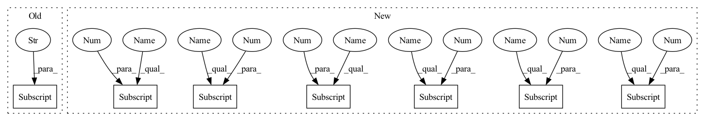

Pattern ID :16

Before Change
self.P4_size = P4_size
self.P5_size = P5_size
self.inner_p3 = self.channels_out["inner_p3"]
self.inner_p4 = self.channels_out["inner_p4"]
self.inner_p5 = self.channels_out["inner_p5"]
self.P3 = C3(self.P3_size, self.inner_p3, self.get_depth(3), False)
self.convP3 = Conv(self.inner_p3, self.inner_p3, 3, 2)
self.P4 = C3(self.P4_size + self.inner_p3, self.inner_p4, self.get_depth(3), False)
After Change
self.P5_size = P5_size
self.convP3 = Conv(self.P3_size, self.P3_size, 3, 2)
self.P4 = C3(self.P3_size + self.P4_size, self.channels_outs[0], self.get_depth(3), False)
self.convP4 = Conv(self.channels_outs[0], self.channels_outs[0], 3, 2)
self.P5 = C3(self.channels_outs[0] + self.P5_size, self.channels_outs[1], self.get_depth(3), False)
self.concat = Concat()
self.out_shape = [self.P3_size, self.channels_outs[0], self.channels_outs[1]]
print("PAN input channel size: P3 {}, P4 {}, P5 {}".format(self.P3_size, self.P4_size, self.P5_size))
print("PAN output channel size: PP3 {}, PP4 {}, PP5 {}".format(self.P3_size, self.channels_outs[0], self.channels_outs[1]))
def get_depth(self, n):
return max(round(n * self.gd), 1) if n > 1 else n
In pattern: SUPERPATTERN
Frequency: 4
Non-data size: 7
Instances
Fragment ID: 100353
Project Name: bobo-y/flexible-yolov5
Commit Name: 9fb058ef7b7925a243a436788f3f55dbb4b3e263
Time: 2022-07-02
Author: yl305237731@gmail.com
File Name: od/models/neck/PAN.py
M Class Name: PAN
N Class Name: PAN
M Method Name: __init__(6)
N Method Name: __init__(8)
M Parent Class: nn.Module
N Parent Class: nn.Module
M File Name: od/models/neck/PAN.py
N File Name: od/models/neck/PAN.py
M Start Line: 21
M End Line: 58
N Start Line: 21
N End Line: 53
'>
Before Change
self.P4_size = P4_size
self.P5_size = P5_size
self.inner_p3 = self.channels_out["inner_p3"]
self.inner_p4 = self.channels_out["inner_p4"]
self.inner_p5 = self.channels_out["inner_p5"]
self.P3 = C3(self.P3_size, self.inner_p3, self.get_depth(3), False)
self.convP3 = Conv(self.inner_p3, self.inner_p3, 3, 2)
self.P4 = C3(self.P4_size + self.inner_p3, self.inner_p4, self.get_depth(3), False)
After Change
def __init__(self, P3_size=256, P4_size=256, P5_size=512, channels_outs=[512, 1024], version="s"):
super(PAN, self).__init__()
self.version = str(version)
self.channels_outs = channels_outs
gains = {
"n": {"gd": 0.33, "gw": 0.25},
"s": {"gd": 0.33, "gw": 0.5},
"m": {"gd": 0.67, "gw": 0.75},
"l": {"gd": 1, "gw": 1},
"x": {"gd": 1.33, "gw": 1.25}
}
if self.version.lower() in gains:
// only for yolov5
self.gd = gains[self.version.lower()]["gd"] // depth gain
self.gw = gains[self.version.lower()]["gw"] // width gain
else:
self.gd = 0.33
self.gw = 0.5
self.re_channels_out()
self.P3_size = P3_size
self.P4_size = P4_size
self.P5_size = P5_size
self.convP3 = Conv(self.P3_size, self.P3_size, 3, 2)
self.P4 = C3(self.P3_size + self.P4_size, self.channels_outs[0], self.get_depth(3), False)
self.convP4 = Conv(self.channels_outs[0], self.channels_outs[0], 3, 2)
self.P5 = C3(self.channels_outs[0] + self.P5_size, self.channels_outs[1], self.get_depth(3), False)
self.concat = Concat()
self.out_shape = [self.P3_size, self.channels_outs[0], self.channels_outs[1]]
print("PAN input channel size: P3 {}, P4 {}, P5 {}".format(self.P3_size, self.P4_size, self.P5_size))
print("PAN output channel size: PP3 {}, PP4 {}, PP5 {}".format(self.P3_size, self.channels_outs[0], self.channels_outs[1]))
def get_depth(self, n):
return max(round(n * self.gd), 1) if n > 1 else n
'>
Fragment ID: 100352
Project Name: bobo-y/flexible-yolov5
Commit Name: 9fb058ef7b7925a243a436788f3f55dbb4b3e263
Time: 2022-07-02
Author: yl305237731@gmail.com
File Name: od/models/neck/PAN.py
M Class Name: PAN
N Class Name: PAN
M Method Name: __init__(6)
N Method Name: __init__(8)
M Parent Class: nn.Module
N Parent Class: nn.Module
M File Name: od/models/neck/PAN.py
N File Name: od/models/neck/PAN.py
M Start Line: 21
M End Line: 58
N Start Line: 21
N End Line: 53
'>
Before Change
// head conv
self.head_conv = nn.Sequential(
Conv(feature_channels[-1], feature_channels[-1]//2, 1),
Conv(feature_channels[-1]//2, feature_channels[-1], 3),
Conv(feature_channels[-1], feature_channels[-1]//2, 1),
)
// Spatial Pyramid Pooling
After Change
if cfg.MODEL_TYPE["TYPE"] == "YOLOv4":
// CSPDarknet53 backbone
self.backbone, feature_channels = _BuildCSPDarknet53(weight_path=weight_path, resume=resume)
elif cfg.MODEL_TYPE["TYPE"] == "Mobilenet-YOLOv4":
// MobilenetV2 backbone
self.backbone, feature_channels = _BuildMobilenetV2(weight_path=weight_path, resume=resume)
else:
'>
Fragment ID: 100439
Project Name: jingtianyilong/yolov4-pytorch
Commit Name: a395d1954d9e236251f52e93b99f12bd952fd8b4
Time: 2020-08-07
Author: your email
File Name: model/YOLOv4.py
M Class Name: YOLOv4
N Class Name: YOLOv4
M Method Name: __init__(4)
N Method Name: __init__(2)
M Parent Class: nn.Module
N Parent Class: nn.Module
M File Name: model/YOLOv4.py
N File Name: model/YOLOv4.py
M Start Line: 129
M End Line: 151
N Start Line: 190
N End Line: 204